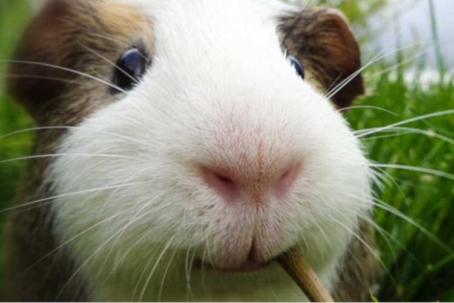

Nociones básicas
Las cobayas son animales muy sociables y tranquilos. Estos roedores de la familia de los cávidos son originarios de los Andes (Perú, Bolivia, Chile y Argentina).
También son conocidas por otros nombres: conejillos de Indias, cuy, cobayo o cuyo.
Existen diferentes tipos de cobaya: cobaya peruana, cobaya abisinia, cobaya Texel, cobaya coronel, cobaya sheltie, cobaya skinny, cobaya baldwin, cobaya americana, cobaya self, cobaya teddy, cobaya rex, etc.
Las principales características de estos animales son:
- Viven entre 4 y 10 años.
- Miden entre 20 y 35 cm
- Pesan entre 500 y 1500 gramos.
- Cuentan con una visión de 340 grados gracias a la posición lateral de sus ojos.
- Tienen visión dicromática, esto es, solo perciben las tonalidades violetas, azules y verdosas.
- Son animales gregarios.

Consejos para cuidar a un cobayo
- Proporcionarle una jaula lo suficientemente amplia para que pueda moverse con libertad.
- Poner en el suelo de la jaula un estrato especial que no dañe sus patas.
- Colocar esta jaula en un lugar tranquilo y libre de corrientes de aire.
- Mantener su jaula limpia.
- Cepillar su pelo con regularidad y asearla.
- Mantenerla entretenida con juguetes y haciéndole compañía.